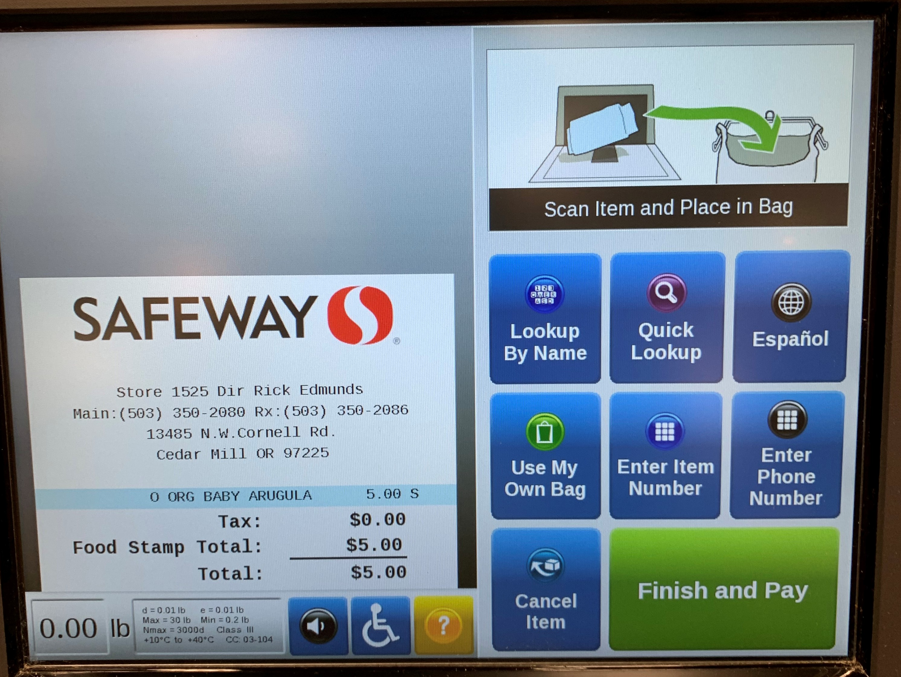
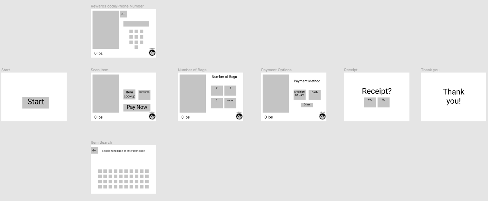
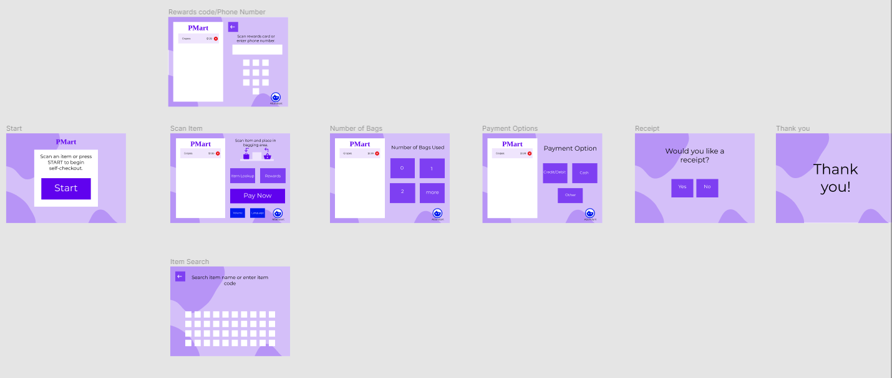

Objective
Visually refresh the self-checkout UI and improve accessibility for the non-tech savvy.
Technologies Used
Figma
Roles Assumed
UI/UX Designer.
Duration
3 days
Why this redesign?
With the pandemic situation and the enforcement of social distancing, I found myself exclusively using self-checkout. And since I took an interest in design a couple months ago, I realized how the UI looked outdated and how it needed a visual update. Since the pandemic looks like it’ll stretch into 2021 and big name retail stores like Walmart released floor plans with increased self-checkout kiosks, I thought it would be the perfect time to redesign the self-checkout UI/UX.
Constraints with Research
Ideally, I would directly interview users of self-checkout at stores, however, given the current lockdown situation, that was difficult. This is why my research instead consists of past surveys conducted by organizations such as CivicScience, tweets made about self-checkout, and 5 conversations with my acquaintances.
Key Takeaways From Research
- Nearly 50% of adults between 18 and 34 years prefer self-checkout while only 19% of those 55 and older prefer self-checkout.
- Reasons cited to use self-checkout:
- Faster than cashier
- More convenient than cashier
- No social interaction
- To steal (according to tweets)
- Reasons cited to not use self-checkout:
- Learning curve to operate the kiosk
- Troublesome to input fresh produce
- Self-checkout kiosk take jobs away from cashiers
- Aversion to call an employee for help.
When searching twitter to see what people have to say about self-checkout, I was astonished by the amount of tweets bragging about stealing by deceiving the self-checkout. This is obviously a problem, however, a simple UI/UX redesign likely won’t be able to address the problem and is too large of a problem to attempt to fix in a 1 week time span.
Current Solution is Overwhelming to a New User
In the scan item page, I feel that there is an overwhelming amount of information, especially for a new user. There are 9 buttons and information that is not needed.
- The 11 buttons on the screen when an item is scanned is overwhelming.
- “0.00 lb” scale is not ever used if the user is not purchasing produce.
- Box of stats like max weight is not needed for the average user. I personally have never found the information in the box useful.
- The graphic of placing items in bags can be pointing the opposite way depending on the orientation of the self-checkout kiosk.
Wireframe
I created a wireframe for the redesign. The general structure is the same. But these are the main changes:
- “Lookup By Name,” “Enter Item Number,” and “Quick Lookup” were condensed into one button. Those options are now behind the “Item Lookup” button.
- “Enter Phone Number” was changed to “Rewards” since people who use that button use it to activate a rewards card, not because they just want to enter their phone number
- Added an additional screen to accept or refuse a receipt since it is not included in the current solution.
- Modified the “call for help” button with a face and the employee’s name to reduce aversion to calling for help.
- Remove Item button would instead be placed next to each item listing to reduce the number of clicks to remove an item.
Discoveries from Testing
I tested the low fidelity prototype by observing 3 volunteers progress through the prototype and ask for feedback afterwards. Some key discoveries were:
- “Call Josh” was not interpreted by “call attendant.”
- Some were confused as to what to do on the rewards screen.
- Some questioned the necessity of the scale.
High-Fidelity Prototype
For the high-fidelity, I created a fictional supermarket called “PMart” with a purple theme. Some key changes I made based on the low-fidelity testing were:
- “Call Josh” was changed to “Attendant” to prevent confusion.
- Instructions were added to rewards screen to add clarity
- Scale is hidden until a product is selected to reduce information on screen.
Outcomes and Lessons
This redesign was a great exercise in becoming familiar with figma and going through a design process. However, I can’t say that it was able to achieve its objective. The UI was visually refreshed with some UX improvements, however, I am unsure if the changes would make the kiosk more approachable. This is because my testing was very limited. Ideally, I would be able to get people who never/refuse to use self-checkout to try to redesign, but due to time constraints and constraints due to the lockdown, I was limited to testing with family members who are accustomed to using self-checkout.